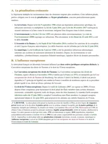

La légitime défense en droit pénal expliquée simplement
D'après l'article 122-5 du Code pénal, tu échappes à toute responsabilité pénale si tu réponds à une atteinte injustifiée, réelle et actuelle par une riposte simultanée, nécessaire et proportionnée. La légitime défense efface alors entièrement l'infraction commise en réponse. Si une seule condition manque, par exemple parce que l'agresseur a déjà fui, ta riposte devient une vengeance, et elle est punissable.

L'essentiel en une phrase
L'article 122-5 du Code pénal efface ta responsabilité pénale si tu réponds à une agression injuste par un acte nécessaire et proportionné, au moment même où elle se produit. Avant de t'accorder ce fait justificatif, c'est-à-dire cette circonstance qui rend l'acte permis, le juge vérifie toutefois six conditions distinctes. Trois conditions portent sur l'atteinte que tu subis, à savoir son caractère injuste, réel et actuel. Trois autres portent sur ta riposte, à savoir sa simultanéité avec l'atteinte, sa nécessité et sa proportionnalité. La jurisprudence en ajoute une septième, absente du texte, puisque ton acte de défense doit aussi être volontaire.
La légitime défense supprime l'infraction elle-même. L'acte commis devient donc permis, et personne ne peut te poursuivre, ni devant le juge pénal ni devant le juge civil. Comme tu obtiens l'effacement complet de l'infraction, la jurisprudence vérifie chaque condition avec beaucoup de rigueur.
La condition la plus souvent discutée en cas pratique est celle de l'actualité de l'atteinte. Dès que l'agresseur a fui ou que l'infraction est terminée, ta riposte devient une vengeance, que le droit pénal punit. Les sujets d'examen décrivent d'ailleurs très souvent un agresseur qui s'éloigne au moment de la riposte.

Fiche complète
Droit pénal général L1 S2
Le fondement légal, l'article 122-5 du Code pénal
L'article 122-5, alinéa 1er, du Code pénal pose la règle générale de la légitime défense des personnes. Le texte dispose que tu n'es pas pénalement responsable si, devant une atteinte injustifiée envers toi-même ou autrui, tu accomplis, dans le même temps, un acte commandé par la nécessité de la légitime défense, sauf s'il existe une disproportion entre tes moyens de défense et la gravité de l'atteinte.
La doctrine explique cette règle ainsi. Quand la police ne peut pas intervenir à temps pour te protéger, le droit te permet de la remplacer pendant un instant. Tu assures alors toi-même ta protection, pendant un moment très court, à condition de rester dans les limites fixées par la loi. C'est pourquoi le juge contrôle chaque condition une par une, et tu dois faire de même dans ta copie.
Les 3 conditions relatives à l'atteinte
La première série de conditions porte sur l'agression que tu subis. Les trois doivent être réunies en même temps, donc il suffit que l'une manque pour écarter la légitime défense.
Une atteinte injustifiée. L'atteinte doit être injuste, c'est-à-dire contraire au droit dans son ensemble. Cette condition exclut d'abord toute légitime défense contre un acte de la force publique accompli dans le cadre légal de ses missions, même si tu trouves cet acte excessif. Face à un policier qui agit légalement, tu peux seulement contester son acte devant le juge. En revanche, dès qu'un particulier commet une voie de fait, un vol avec violence ou une agression, le caractère injuste de l'atteinte ne fait aucun doute.
Une atteinte réelle. L'atteinte doit exister objectivement, et une crainte sincère ne suffit pas si rien ne la justifie. La jurisprudence a toutefois assoupli cette exigence avec la théorie de l'apparence. La Cour de cassation a jugé qu'un homme qui tirait un coup de feu proportionné en pleine nuit, croyant que des cambrioleurs armés fonçaient sur lui en voiture, se trouvait bien en situation de légitime défense, même si les cambrioleurs cherchaient en réalité à fuir (Cass. crim., 8 juillet 2015, n° 15-81.986). Cette légitime défense putative, c'est-à-dire fondée sur un danger que la personne croyait réel, reste appréciée de façon très stricte. Ta croyance dans le danger doit être raisonnable au vu des circonstances.
Une atteinte actuelle ou imminente. C'est la condition la plus discutée en cas pratique. L'atteinte doit être en cours de réalisation au moment de ta riposte, ou sur le point de se produire dans un temps très court. Une fois que ton agresseur a cessé son acte ou pris la fuite, l'atteinte est passée et plus aucune riposte n'est justifiée. Par exemple, une personne qui s'enfuit dos tourné ne t'attaque plus au moment où tu frappes. Les juges refusent le plus souvent la légitime défense pour cette raison.
Tu révises ton droit pénal général ?
Je t'envoie gratuitement mon guide « Réviser le droit sans s'épuiser ». Tu y trouves ma méthode de révision en sept parties, celle qui permet à mes élèves de retenir les conditions et les arrêts semaine après semaine.
Les 3 conditions relatives à la riposte
La seconde série de conditions porte sur ta réaction elle-même. En plus d'une atteinte injuste, réelle et actuelle, ta défense doit respecter trois exigences.
La simultanéité. Ta riposte doit intervenir dans le même temps que l'atteinte, selon les termes exacts de l'article 122-5. Une riposte anticipée, portée avant que l'agression commence, est donc exclue, tout comme une riposte différée, portée après la fin de l'agression. Ta défense doit aussi être un geste voulu, fait en réaction directe à l'agression. L'arrêt Cousinet du 16 février 1967 (Cass. crim., n° 66-92.071) a en effet jugé que la légitime défense ne peut pas couvrir un acte involontaire. Il ajoute ainsi une septième condition, absente du texte, l'intentionnalité.
La nécessité. Ta riposte doit être le seul moyen disponible pour faire cesser l'atteinte. La Cour de cassation a toutefois précisé que la loi ne t'oblige pas à fuir avant de te défendre (Cass. crim., 28 février 2006, n° 05-87.400). En revanche, si tu pouvais réellement appeler à l'aide, t'écarter du danger ou alerter des tiers présents, ta riposte physique perd son caractère nécessaire.
La proportionnalité. Tes moyens de défense ne doivent pas être manifestement disproportionnés par rapport à la gravité de l'atteinte. La Cour de cassation apprécie cette proportionnalité d'après l'acte de riposte que tu as choisi, quel que soit le résultat qu'il a produit. Un coup porté pour repousser des coups reste donc proportionné, même si l'agresseur se retrouve gravement blessé, parce que ce résultat n'était pas prévisible au moment où tu as réagi (Cass. crim., 17 janvier 2017, n° 15-86.481). À l'inverse, une personne qui sort une arme mortelle pour répondre à une simple bousculade ou à un petit vol commet une riposte manifestement disproportionnée.
Les présomptions légales de l'article 122-6
L'article 122-6 du Code pénal prévoit deux cas dans lesquels la légitime défense est présumée, c'est-à-dire tenue pour acquise sans que la personne ait à la prouver. Il s'agit d'abord de repousser, de nuit, l'entrée par effraction, violence ou ruse dans un lieu habité, puis de se défendre contre les auteurs de vols ou de pillages commis avec violence. L'arrêt Réminiac du 19 février 1959 a mis fin à une longue hésitation, en jugeant que cette présomption est simple, autrement dit qu'on peut la renverser. Le ministère public peut donc démontrer que les conditions réelles de la légitime défense manquent (Cass. crim., 19 février 1959).
Dans ces deux cas, l'accusation doit donc prouver que ta défense n'était pas légitime. En dehors d'eux, la charge de la preuve s'inverse, et tu dois établir toi-même chaque condition de la légitime défense.
La défense des biens et l'état de nécessité
Deux notions voisines se distinguent de la légitime défense des personnes. D'abord, l'alinéa 2 de l'article 122-5 prévoit la légitime défense des biens. Il exige que l'infraction soit encore en train de se commettre au moment de ta riposte, ce qui exclut toute anticipation, alors que la défense des personnes accepte aussi une atteinte simplement imminente. De plus, la défense des biens t'interdit tout homicide volontaire, et ton acte doit rester strictement nécessaire et proportionné à la gravité de l'infraction que tu interromps.
Ensuite, l'état de nécessité de l'article 122-7 répond à une logique différente. Il justifie l'infraction commise pour sauvegarder une personne ou un bien face à un danger actuel ou imminent, à condition que l'acte reste proportionné à la gravité de la menace. La différence tient à l'origine du péril. La légitime défense répond toujours à une agression humaine injuste, tandis que l'état de nécessité peut répondre à n'importe quel danger, par exemple un incendie ou une inondation, même quand personne ne commet d'infraction contre toi. Les conditions et la preuve diffèrent entre les deux articles, donc une confusion fait perdre les points de la question. La fiche sur le jugement Ménard montre l'état de nécessité sur un cas réel, celui d'une mère relaxée en 1898 pour avoir volé du pain, souvent cité comme premier exemple de ce raisonnement.
Utiliser la légitime défense dans une copie
En plus des sept conditions, tu dois savoir où les placer selon l'exercice que tu prépares.
Dans un cas pratique. Tu traites toujours les conditions relatives à l'atteinte avant celles relatives à la riposte, car la riposte se juge par rapport à l'atteinte. Si une seule condition manque, tu peux conclure sur ce point sans examiner les autres en détail. Une très bonne copie les examine pourtant toutes, à titre subsidiaire, c'est-à-dire au cas où le juge verrait les choses autrement, pour montrer qu'elle connaît tout le régime. Le cas pratique corrigé sur la légitime défense applique ce modèle du début à la fin.
Dans un commentaire d'arrêt. Tu situes l'arrêt que tu commentes par rapport à l'arrêt Cousinet de 1967, qui reste la décision de référence sur l'exigence d'un acte de défense volontaire. La page sur la méthode du commentaire d'arrêt détaille la démarche complète.
Une bonne copie relie enfin la légitime défense au reste du droit pénal général, en particulier à l'état de nécessité de l'article 122-7 et aux autres causes d'irresponsabilité. Le cours de droit pénal général L1 S2 reprend tous les faits justificatifs et toutes les causes de non-imputabilité, c'est-à-dire les situations où l'acte ne peut pas être reproché à son auteur, avec leurs conditions.
Les erreurs à éviter avec la légitime défense
- Admettre la légitime défense contre un agresseur en fuite. La condition d'actualité de l'atteinte disparaît dès que l'agresseur s'éloigne. Une riposte à ce moment-là devient donc une vengeance.
- Confondre légitime défense des biens et légitime défense des personnes. L'alinéa 2 de l'article 122-5 exige une infraction encore en train de se commettre, et t'interdit tout homicide volontaire comme moyen de défense. Ces deux limites sont propres à la défense des biens.
- Confondre légitime défense et état de nécessité. Tu réserves l'article 122-5 aux agressions humaines injustes, et l'article 122-7 aux dangers de toute nature, avec ou sans agresseur identifié.
- Oublier l'exigence d'intentionnalité. Depuis l'arrêt Cousinet de 1967, un dommage causé involontairement, par exemple dans un moment de panique, reste en dehors de la légitime défense.
Questions fréquentes
Quelles sont les conditions de la légitime défense ?
Peut-on invoquer la légitime défense contre un agresseur qui a déjà pris la fuite ?
Quelle différence entre la légitime défense et l'état de nécessité ?
La légitime défense est-elle toujours présumée ?

Tout le programme de droit pénal général tient dans une seule fiche.
Ma fiche de droit pénal général L1 S2 reprend chaque cause d'irresponsabilité et chaque notion. Tout y est expliqué avec des mots courants, et tu peux t'en servir tel quel en cas pratique.
Voir la fiche de droit pénal général L1 S2